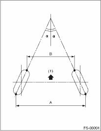

FRONT SUSPENSION > General Description
|
Model |
Non-turbo |
Turbo | |
|
Front |
Camber (Tolerance: ±0°45′, Difference between RH and LH: 45′ or less) |
−0°25′ | |
|
Caster (Reference) |
3°03′ | ||
|
Toe-in |
0±3 mm (0±0.12 in) Toe angle (sum of both wheels): 0°±0°15′ | ||
|
Kingpin angle (Reference) |
13°12′ | ||
|
Wheel arch height (Tolerance: +12 /−24 mm (+0.47/−0.94 in)) |
437 mm (17.20 in) | ||
|
Rear |
Camber (Tolerance: ±0°45′, Difference between RH and LH: 45′ or less) |
−0°50′ |
−0°55′ |
|
Toe-in |
2±3 mm (0.079±0.118 in) Toe angle (sum of both wheels): 0°10′±0°15′ | ||
|
Thrust angle (Tolerance: ±0°30′) |
0° | ||
|
Wheel arch height (Tolerance: +12 /−24 mm (+0.47/−0.94 in)) |
440 mm (17.32 in) |
435 mm (17.13 in) | |
NOTE:
• Front and rear toe-in and front camber can be adjusted. If the toe-in or camber tolerance exceeds specifications, adjust toe-in or camber within the adjustment standard.
• This vehicle is not equipped with adjustment mechanism for alignment items other than the above. If other measurements exceed specifications, check suspension parts and connections for deformation, and replace with new parts as required.

|
(1) |
Front |
|
A − B = Positive: Toe-in, Negative: Toe-out | |
|
α = Individual toe angles | |